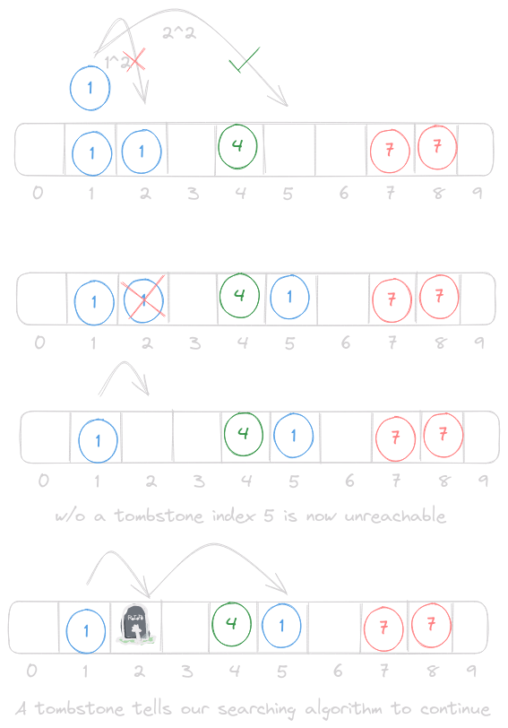

Hashmap
Introduction
A hashmap is a data structure that gets a ton of use, but it’s implementation can be a bit of a black box. This is further complicated by the face that even language to language a hashmap does not have the same implementation. Some hashmaps choose to preserve the ordering of insertion (Python, V), others have different maps for unordered and ordered (sorted) storage (C++), and yet others differ on their choice of backing storage (arrays vs trees). Even among those that use an array for storage, there are 2 different ways to manage collisions.
The actual implementation shouldn’t matter for the majority of users, as they just want to treat it as a fast key-value store. Yet the speed of our hashmap is something that can be greatly impacted by our choice of collision resolution.
Includes
#include <stdint.h> // uint64_t int64_t size_t #include <stdio.h> // Printing (not necessary as a library, just for testing) #include <stdlib.h> // Lots #include <stdbool.h> // True/False #include <string.h> // Nice to have string functions in C #include "hashmap.h" // Our own header file
Header
I will be mixing the entire code for our hashmap throughout the article, to break up the reading, and to make I show you the code that goes along with the thought. Having this header file will ensure that even if our code is out of order, the compiler will be able to make sense of it.
#pragma once #include <stdint.h> #include <stdbool.h> #define TOMBSTONE UINT64_MAX #define STR_BUF_LEN 64 bool is_prime(int); int next_prime(int); typedef struct { void *key; uint64_t value; } pair; // Pretty Printing Functions, char[STR_BUF_LEN] max output // Can be used to define a custom print function for more complex datatypes typedef void (*print_function)(char*, void*); void unsigned_print(char*, void*); void signed_print(char*, void*); void double_print(char*, void*); void address_print(char*, void*); void string_print(char*, void*); // Hashing Functions typedef uint64_t (*hash_function)(void *); uint64_t no_hash(void *); uint64_t basic_hash(void *); uint64_t fnv_hash(void *); uint64_t fnv_string_hash(void *); // Equality Functions typedef bool (*equals_function)(void*, void*); bool value_equals(void*, void*); bool str_equals(void*, void*); //Hashmap typedef struct { float load_factor; int capacity; int size; int collisions; hash_function hash_func; equals_function equals_func; pair *array; } hashmap; hashmap hashmap_init(hash_function, equals_function, float, int); void hashmap_free(hashmap*); pair *hashmap_find(hashmap*, void*); pair *hashmap_first_avail(hashmap*, void*, int*); void hashmap_resize(hashmap*, int); void hashmap_insert(hashmap*, void*, uint64_t); uint64_t hashmap_get(hashmap*, void*); uint64_t hashmap_delete(hashmap*, void*); void hashmap_print(hashmap*, print_function, print_function);
Architecture
When we store our hashmap in an array each key should ideally map to a unique index in that array. Of course this will likely never happen even with the best hashing function in the world. So we have to find a balance of the best hashing function we can afford within our time constraints. There are many examples of hashing functions that can be used, but in our case we are trying to find a hash function that can take in a pointer (void*) and hash that 8 byte value which we can use as our index.
For the purposes of experimentation and extensibility we are going to allow our implementation to take a function pointer to a hash function. This way we can check the speed and collision rate with various different hashing methods.
Hashing
uint64_t no_hash(void *pointer) { return 0; }
Our first hash function is more of a nice to have during testing as opposed to an actually useful hashing function. It is quite fast however 🤓. We will later use this to test how our hashmap handles the case where multiple elements produce the same hash, and since they will all produce 0 this is a great way to test that.
uint64_t basic_hash(void *pointer) { return (uint64_t)pointer ^ ((uint64_t)pointer >> 32); }
Our first real hash function is relatively simple, it XORs the bottom half and the lower half together and returns the result. Not the best hash function, but with only 2 instructions it is about as quick as we can get without returning a constant value.
uint64_t fnv_hash(void *pointer) { // Prime and offset basis values for 64-bit values uint64_t hash = 14695981039346656037ull; uint64_t byte_pointer = (uint64_t)pointer; for (int i = 0; i < 8; i++) { hash *= 1099511628211; hash ^= byte_pointer & 0xFF; byte_pointer >>= 8; } return hash; }
The second hash function is much more complex, and we should expect a lower rate of collisions because of this. Even with added complexity the actual function should still be fairly quick to compute. This is something we will be able to measure once our hashmap is fully implemented.
Basic Hash Original: 0x5589081942a0 | Hashed: 0x558908191729 Original: 0x5589081942c0 | Hashed: 0x558908191749 Original: 0x5589081942e0 | Hashed: 0x558908191769 FNV Hash Original: 0x5589081942a0 | Hashed: 0x6fb6159253d2b95a Original: 0x5589081942c0 | Hashed: 0x63c1db2f83d3da3a Original: 0x5589081942e0 | Hashed: 0xe114c79be4e359a
For a first test I made 3 pointers just like you might when making 3 C-style strings. These values are on the stack, so they are all just a few bytes apart, which is a great test for our hash functions. There is a term called the avalanche effect in which a single bit change in the value to be hashed produces a very large change in the resulting hash.
Our more basic hash function does nothing to the upper 32 bits, and the lower 32 bits only differ by their second hexadecimal digit. This may not be that big of an issue with a large table, but a smaller table may expose some issues. The FNV hash produces vastly different has values from small differences in input values.
Let’s now take a look at how data is stored in a hashmap, so we can see why our choice of hashing function may impact the speed of our data structure.
Storage and Retrieval
How does a hashmap actually store the data we want to retrieve?
At first it seems like it would make sense to just store the value, since we know that it’s key will only ever map to one index. However, this quickly falls apart when collisions come into the picture. If all of our “boxes” just stored the values we would have no way to tell them apart in case of a collision. Instead we store elements as pair or their key and value.
The structure of this pair is not as important to our implementation, and may vary from language to language. We will use a struct here, python may use a tuple, others may use a class. The point here is that we need our elements to be either a fixed size, or something we can point to in memory. Our struct will contain two 8-byte values, totaling to a 16-byte struct.
typedef struct { void *key; uint64_t value; } pair;
With our elements wrapped up in a struct we can easily probe along and find when our key matches, or with separate chaining we will walk the linked list until we find our desired key. Due to our hash being a pure function, we know that our resulting index and probing order will always be the same for any given key. This means if we do not find a match, we know with 100% certainity that the key is not present in our map.
Backing Storage
One of the main characteristics of a hashmap is its O(1) insertion and retrieval time. If you’re familiar with an array we know that insertion and lookup with a known index is constant time, but forcing our users to keep track of every last index would be quite a pain. This is where a hashmap comes in. Instead of having users keep track of specific indexes, or performing a search to find a specific element, we will combine the backing storage of an array and a hashing function to figure out where each item should be placed.
This is great because adding an item to an array is as simple as adding an offset to a pointer and writing to some memory, which is constant with any amount of elements. We load a value into a register, and store it with a known offset into the array. Even in RISC-V assembly we only have 2 instructions to store our value.
In order to get the index for each element, we have to somehow reduce its value down to our array size. The hash functions return uint64_t values, which are much larger than our table indexes allow. The easiest way to “clamp” this hash value to our array is with a modulo operation. This allows us to take a value in the billions, and reduce it down to any table size. If our array has a size of 14 let’s see what indexs our different hash functions product.
Basic Hash Hashed: 0x55e8f951e748 | [14]Array Index 6 Hashed: 0x55e8f951e728 | [14]Array Index 2 Hashed: 0x55e8f951e708 | [14]Array Index 12 FNV Hash Hashed: 0xa7130ebc6001a9f8 | [14]Array Index 4 Hashed: 0x5c21814efdd7ab98 | [14]Array Index 12 Hashed: 0x9eb867d5a95e6e38 | [14]Array Index 4
Huh. Even our more advanced hash function, with vastly different values, ends up producing the same index twice. Well that’s not good for our users, if they try to store 2 different values we would end up overwriting the first value. We can continue to increase our array size to limit the amount of collisions, but we reach a point where we end up with a large number of empty spaces.
So we now know we need an array to store our elements, but how big should our array be? Well, we need to have a concept of how full we should allow our hashmap to get. Of course if we made an array that is as long as a uint64_t could address we would have the fewest number of collisions. Or we could have a super small array, with an element occupying every single index. The former wastes a lot of memory, and the latter would require reallocation on every insert.
This is where our “load factor” comes in to play. Load factor describes the ratio between the number of elements in the haspmap, and the total capacity of the hash map. We should aim for a load factor that maximizes “fullness”, and minimizes the chance of collisions. This is impacted greatly by the choice of hash function, so we will allow this to be tunable in our implementation.
If a user is not concerned about memory usage they can choose a very low load factor (0.1-0.2), that will almost entirely eliminate that chance of collisions. Most users would likely choose a value around 0.5, which we will later see produces a pretty good balance.
Lets now look at how we can initialize our hashmap, and eventually clean up the memory is uses.
// `hash` is any hash function that takes a `void*` and returns a `uint64_t` // Set `load_factor` to `0` for default value // Set `size` to `0` for default value hashmap hashmap_init(hash_function hash, equals_function eq, float load_factor, int capacity) { if (!hash) { fprintf(stderr, "Please specify a valid hash function\n"); exit(EXIT_FAILURE); } if (!load_factor) { load_factor = 0.5; } if (!capacity) { capacity = 11; } pair *array = calloc(capacity, sizeof(pair)); if (!array) { perror("calloc failed"); exit(EXIT_FAILURE); } return (hashmap){load_factor, capacity, 0, 0, hash, eq, array}; } // Frees all dynamically associated memory with a hashmap // the hashmap becomes invalid after calling free void hashmap_free(hashmap *h) { if (!h) { return; } free(h->array); h = NULL; }
Don’t worry too much about the ability to pass in a hashing function, or an equals function for now. We will discuss those later. For now let’s focus on the memory allocation, for which I prefer to use calloc. I find working with zereod our memory to not only be safer, but faster to catch any errors in my algorithms. If the user passes a specific capacity we use that, otherwise we set it to a reasonable prime number.
Once the user is done with the hash map we need some way to cleanup all the memory that it occupies. Since we are focusing on an open addressing implementation we only need to free the memory allocated for our array. The last thing here is to set the hashmap itself to NULL, this is a good idea when cleaning up our hashmap, as the rest of our user facing API will be setup to fail if the hashmap is NULL.
You may notice that even with a low load factor we can still have collisions, so how do we handle this?
Insertion and Collision Resolution
We will cover 2 different groups of strategies when it comes to resolving collisions in a hashmap.
Open Addressing
Linear Probing

In open addressing when 2 elements map to the same index we simply move to a different index to store that element. This process continues until we find an empty space, and we store the element there. The example above uses linear probing, in which the index is increased by 1 as we search for an empty space. This is in contrast to quadratic probing, where the index is increased by n2, where n is the number of collisions we have encountered. Increasing by a larger amount spaces the elements out more and decreases the chances of collisions.
Quadratic Probing
An interesting thing to note with quadratic probing is its ideal conditions. Quadradic probing performs best when using a prime number table size, and a load factor < 0.5. In these conditions quadratic probing will not only always find a valid position, it will also do it in size/2 jumps. When we go to implement our hashmap with open addressing later we will see if we can ensure that both of these conditions are always met.
Double Hashing
There is one more type of open addressing called double hashing. Without a collisions this strategy performs exactly the same as before, but when we run into a collision we do something new to try and resolve that. Instead our index by a consistent pattern we introduce a second hash function that is called for each collision.
Double hashing has some advantages, but it is very reliant on choosing a good hash function. The hash function must ensure that ever index of the table is explored, otherwise this offers no advantages over other probing strategies. It also must never return a value of 0, as this would stall probing and thus the program it is being used in.
With that being said, double hashing would be a good strategy to explore if it fits your data, and you can tolerate the cost to compute a hash at each step of probing.
Separate Chaining
The other main strategy to resolve collisions in a hashmap is separate chaining.
Elements themselves are not stored directly in the array, instead each index in the array serves as the head node of a linked list which stores all collisions in a chain. At first separate chaining may look more complicated to implement, but it is much easier when it comes to writing the code.
When we go to insert an element all we have to do is make our new node point to the old list, and make our head node point to us. This handles both the case where the list is empty, and where the list has elements. Lookup works in much the same way, we go to the index and walked the linked list searching for the element, and if we find it we return it.
Speed Considerations
As you may have noticed with open addressing this also increases the time it takes to find an element if we have a high number of collisions. While separate chaining may be easier to implement, it is potentially a slower implementation of a hashmap.
#include <time.h> #include <stdlib.h> #include <stdio.h> struct Node { int value; struct Node* next; }; int main(){ struct timespec start, end; // Heap Allocated Array int *array = calloc(1024, sizeof(int)); for (int i = 0; i < 1024; i++) { array[i] = i; } clock_gettime(CLOCK_MONOTONIC, &start); int temp; for (int i = 0; i < 64000; i++) { temp = array[i%1024]; } clock_gettime(CLOCK_MONOTONIC, &end); double array_elapsed_time = (end.tv_sec - start.tv_sec) * 1000.0 + (end.tv_nsec - start.tv_nsec) / 1e6; printf("Time_Arr: %.3f milliseconds\n", array_elapsed_time); // Linked List struct Node* head = NULL; for (int i = 0; i < 1024; i++) { struct Node* new_node = (struct Node*)malloc(sizeof(struct Node)); new_node->value = i; new_node->next = head; head = new_node; } clock_gettime(CLOCK_MONOTONIC, &start); for (int i = 0; i < 64000; i++) { struct Node* temp = head; for (int j = 0; j < i % 1024; j++) { temp = temp->next; } } clock_gettime(CLOCK_MONOTONIC, &end); double list_elapsed_time = (end.tv_sec - start.tv_sec) * 1000.0 + (end.tv_nsec - start.tv_nsec) / 1e6; printf("Time_LL: %.3f mlliseconds\n", list_elapsed_time); printf("%.0fx Slower", list_elapsed_time/array_elapsed_time); }
| TimeArr: | 0.131 | milliseconds |
| TimeLL: | 40.539 | mlliseconds |
| 309x | Slower |
Run to run variation messes with the calculations a bit, but we can see that a linked list is around 150-200x slower than direct array access, when accessing a container of length 1024, 64000 times. This shouldnt be a surprise once you understand how memory access works at a lower level
Computers are very good at accessing contiguous blocks of memory. This is because an entire linear chunk is brought into the CPU at a time, and placed into the cache, called a cache line. Arrays, vectors, and structs fit into this model perfectly, a contiguous chunk of memory where we are likely to access every element.
Our open addressing strategy allows us to take advantage of this linear memory access (referred to as the principle of locality). As we probe through our array all of these memory accesses will come through the CPU’s cache, which is orders of magnitude faster than going out to RAM.
As for separate chaining, its memory access may be spaced out all over in memory. When we store elements in a linked list each node much be allocated separately, and then made to point at the next element in the list. This means we must dereference a pointer at each step in the chain in order to see the value that is actually at that memory address. On top of that, dynamically allocated nodes have no garuntee of being contiguous in memory (if they did we would just store them in an array), so they cannot take advantage of the CPU’s cache.
Having said all of that, theory does not always map 1:1 to the real world. So we will implement both stragegies of collision resolution for our hashmap and see which one works best for our data.
C Data Structures
As an aside, one of the biggest reasons I enjoy C is that is encourages users to implement their own data structures. These can have specific behavior that suits their use case. For example, we will be implementing as general of a hashmap as we can here, with void* keys, and uint64_t values. The keys can be a pointer to any value, or be used to store a 64-bit integer, and same with the values. We are doing this to show the flexability of this implementation, but using pointers will slow down our hashmap.
If you know that your hash map will always use strings as keys, and integers as values you can encode that behavior in the implementation. You can also perfectly tune a hash function for your specific input data.
Deletion
At this point we would have a nearly complete hashmap, with the ability set and get any arbitrary pair. The last thing we need to implement for our user facing API is the removal of an element.
Separate Chaining
In the case of separate chaining this is no different than a removal of an element in our linked list. Nothing to complicated to handle, other than checking our position in the list and updating the head if necessary.
Open Addressing
Our implementation with open addressing will be more complicated to handle. At first it may seem like we could just zero out the memory at that array index and call it a day. Which we could easily do, but this would make our probing very inefficient. Instead of stopping our probe when we hit an empty index, we would need to continue probing until we loop back around to an element we have already checked. On a small scale this probably isn’t too bad, but once we get into the 1000’s of elements we would be looking for ways to optimize lookups.
Instead we can use a concept called a “tombstone”.

The basis of our entire open addressing hashmap is the hash and probe sequence. Insertion, retrieval, and deletion will all use this pipeline. Without introducing the complications of deletion they first 2 seemed simple, but our probing algorithm will have to change once we introduce tombstones. A tombstone essentially tells us that an element used to be here, so we should continue on searching.
This also slightly complicated the concept of insertion. We can no longer find the first “free” space to insert our element. We may run into the case where we find a tombstone space while we probe along, but if we were to instantly insert ourselves into this space we run the risk of having a duplicate key in the map. For this reason we have to run our entire probing sequence on an insert before deciding to insert ourselves at the first available spot. Of course if we do happen to run into a truly empty space before any tombstones we are safe to insert ourselves there instead.
Memory Management and Resizing
With our user facing API covered now we have to talk about the management of all this data.
Earlier we discussed the concept of load factor, and we would ideally like to keep this as low as possible (and below 50% in the case of quadratic probing). We wouldn’t be able to accomplish this without dynamically allocating memory, so that is exactly what we have to do. However, we should probably keep a few things in mind when decided how our hashmap should behave.
Initial Size
If a user is going to instantiate a hashmap it is likely they are going to want to insert elements straight away. So we should either set a sensible default size, or allow this value to be specific at create time. They both sound reasonable, so why not both.
Resizing is Expensive
We haven’t covered this part of a hashmap yet, but it is more complex than it might first appear. My first thought was to simply expand the backing array and copy all the elements over, thus lowering our load factor. However, this won’t help the speed of our hashmap at all, because elements that had collisions before will still have the same collision, and we may end up losing track of elements due to the new table size. Instead, we need to rebuild our hashmap each time we resize.
The process is similar for both methods of collision management. We first create a new array to hold our bigger hashmap, and place each element into its new spot, one by one. This involves rehashing every single key to figure out where it should be placed, which gets expensive once a table is large enough. For this reason we want to try and avoid resizing the table when possible.